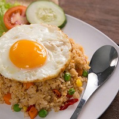
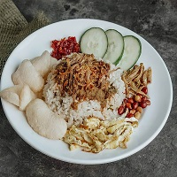

Soto Ayam
Makanan Berkuah
Soto ayam adalah makanan khas indonesia yang berupa jenis sup ayam dengan kuah yang berwarna kekuningan

Makanan Pecel
Makanan Dengan Bumbu Kacang
Pecel adalah makanan yang menggunakan bumbu sambal kacang sebagai bahan utamanya yang dicampur dengan aneka jenis sayuran